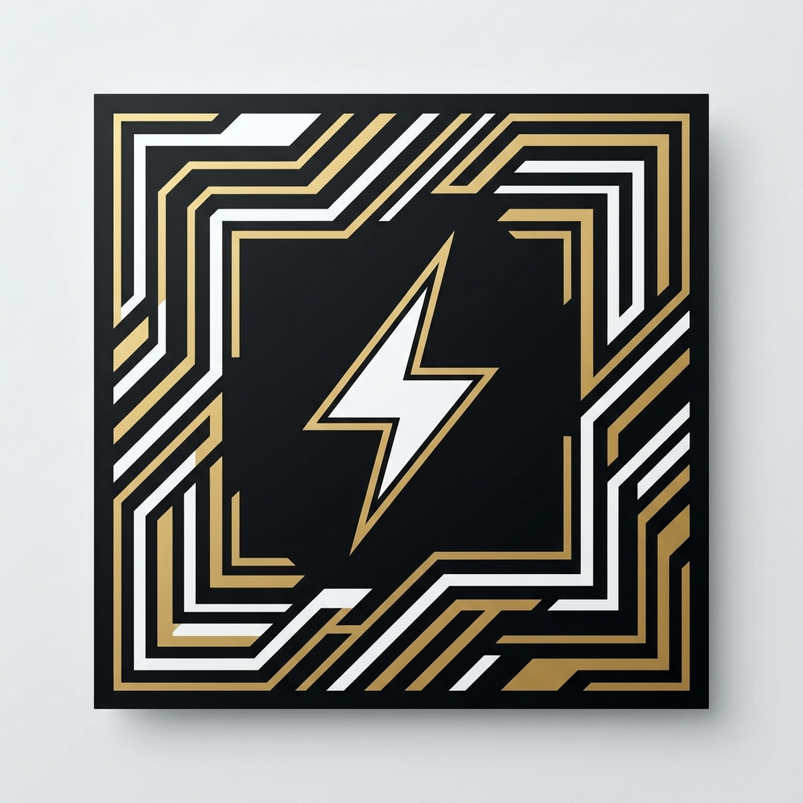

Activate AR ⚡
Circuit AR
Card Scanner
Point your camera at any business card or ID card to bring up the Amit Ke Circuits microsite.
- 1. Tap "Activate Circuit AR" and allow camera access.
- 2. Point your phone at any card — no special badge needed.
- 3. Tap "Visit Microsite" once it appears.
Prefer not to use the camera? Open the microsite instead →
Experimental Feature
Circuit AR is
charging up.
Camera ya AR load nahi hua? Koi tension nahi. Amit Ke Circuits microsite yahin se open karo.
Open Microsite